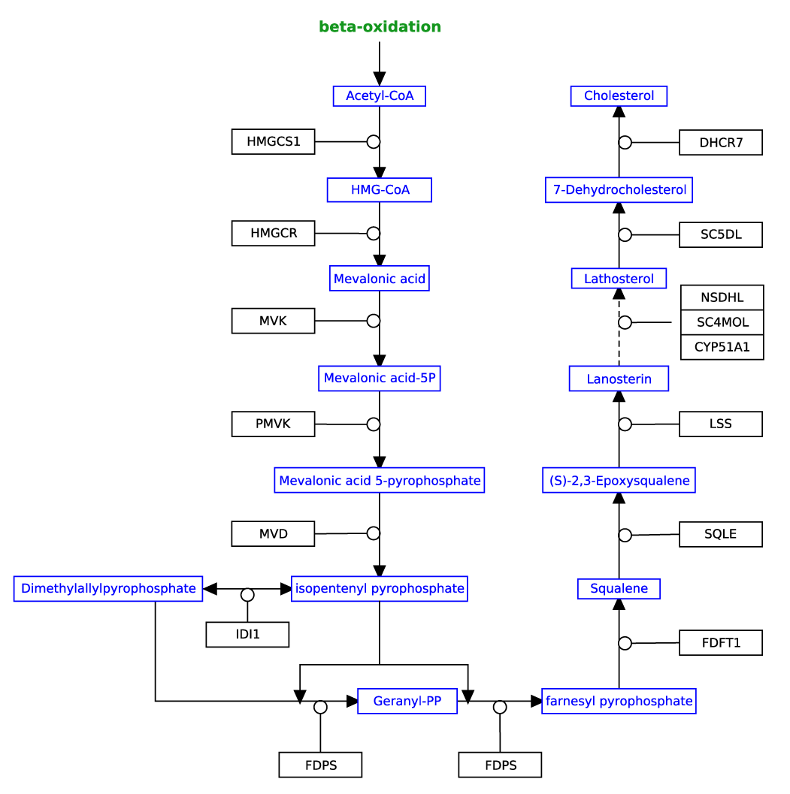

Background
We have all heard of cholesterol. Having too much of it is bad for the heart. But not having enough can also be risky, especially during development. Cholesterol is so important that every cell in every animal is equipped with the pathway below so they can synthesize it from byproducts of other pathways.
In the pathway below, metabolites are blue and enzymes are black. Conversions between metabolites are depicted as arrows (interactions), and to illustrate that an enzyme is necessary for the conversion between two metabolites, an enzymatic interaction points to the conversion arrow. This interaction style has a open circle at the end, according to MIM convention.
Challenge
